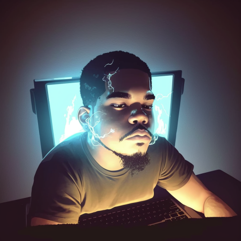

Oi, eu sou
João Araújo.
Desenvolvedor Front-end
Linkedin

Olá, me chamo João Araújo, tenho 23 anos e almejo ser um Exceptional Front-End Developer, sou nascido e criado em Ribeirão Preto-SP, local por onde tenho grande paixão.
Falando um pouco mais sobre mim, estou cursando Análise e Desenvolvimento de sistemas na Estácio de Ribeirão Preto. Confesso que por um período estive perdido no mundo da tecnologia, sem saber por onde e como prosseguir. Mas logo me apaixonei pelo Desenvolvimento Front-End e cada vez mais venho me aprimorando e me aprofundando nas tecnologias utilizadas atualmente.